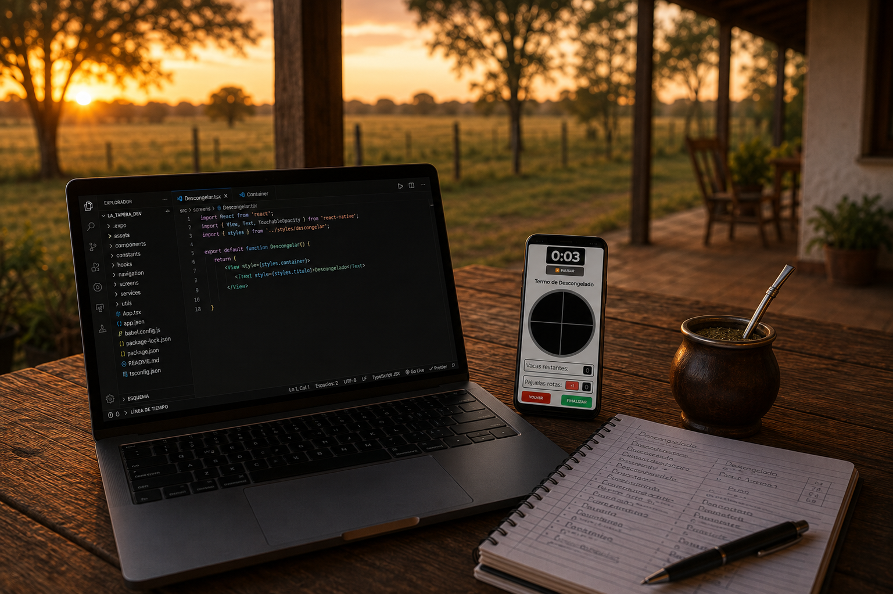
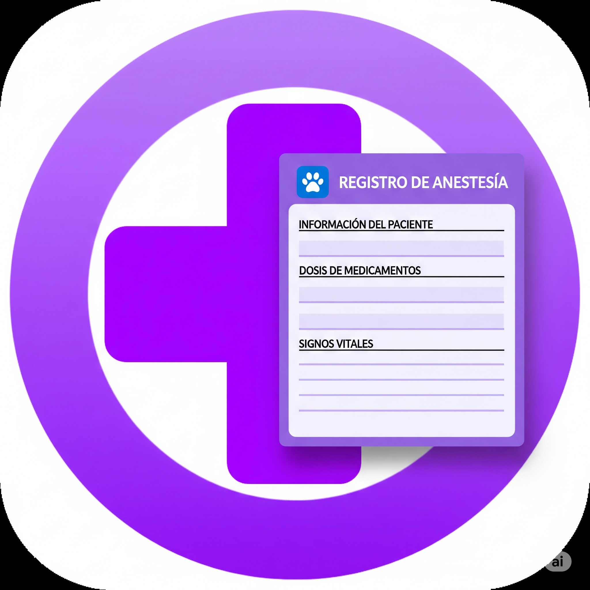

01
El encuentro
La Tapera Dev nace del encuentro entre dos mundos que forman parte de mi vida: El campo, la veterinaria y la programación.
La Tapera Dev nace del encuentro entre dos mundos que forman parte de mi vida: El campo, la veterinaria y la programación.
Durante muchos años conviví con el trabajo rural y con personas dedicadas a la medicina veterinaria. Entonces apareció una pregunta: ¿Y si esas experiencias pudieran transformarse en herramientas digitales útiles?
Desde entonces tratamos de desarrollar herramientas nacidas de situaciones reales. Las ideas no nacen frente a una computadora. Nacen en una manga, en un campo, durante una conversación o en una hoja llena de anotaciones al final del día. Después llega el momento de convertir esas necesidades en herramientas digitales, que no buscan ser las más complejas. Buscan ser simples y útiles.
Una herramienta no termina cuando está desarrollada. Empieza realmente cuando alguien la usa. Cada comentario, cada sugerencia y cada necesidad ayudan a mejorar las herramientas actuales y también a imaginar las próximas. Por eso creemos que desarrollar también significa escuchar.
Por eso decimos "tratamos de desarrollar herramientas". No porque dudemos de lo que hacemos, sino porque sabemos que siempre pueden mejorar. Cada proyecto es una oportunidad para aprender, corregir y volver a intentarlo. Esa es, simplemente, nuestra forma de trabajar.

DescongelApp es un asistente para la persona encargada de descongelar durante una IATF. Además, nos permite almacenar y compartir toda la información de la actividad.

Formulario de anestesia, es la forma digital de completar los registros de anestesia, de una manera simple y practica.
Aplicación en desarrollo
¿Por qué solo los grandes problemas merecen buenas herramientas o nuevas tecnologías?
No prometemos resolver todos los problemas.
Pero vale la pena intentarlo.